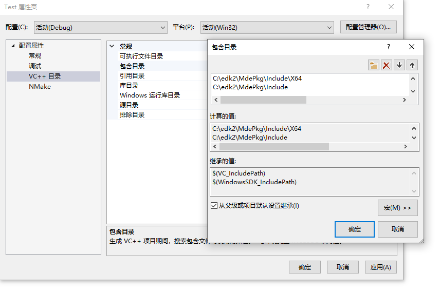
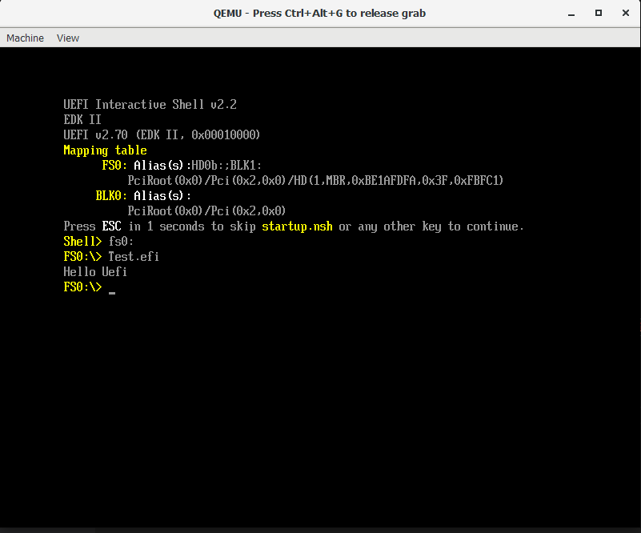

UEFI原理与实践笔记（二）-Hello UEFI
在上一篇UEFI原理与实践笔记-开发环境搭建中我们已经了解了EDK2的环境搭建，这一节讲一下UEFI的基础工程。
基础概念
在EDK2的根目录下，有许多以*Pkg命名的文件夹，Pkg的全称是Package，由一组模块，平台描述文件（.dsc文件），包声明文件（.dec文件）组成的集合。模块是UEFI系统的一个特色，模块以.efi可执行文件的形式像插件一样动态加载到UEFI内核中。对应到源文件，EDk2中的每个工程模块由元数据文件（.inf文件）和源文件组成。
模块中的（.inf）文件用于自动编译源代码，与Makefile的功能类似；包相当于VS中的项目，.dsc文件相当于vs中的.sln，.inf文件相当于vs中的.proj文件。
UEFI标准应用程序工程模块
标准应用工程模块是最常见的应用工程模块，我们仿照ShellPkg，创建一个最简单的UEFI应用程序———Hello UEFI作为示例，来介绍UEFI标准应用程序工程的格式。
我们先看一下ShellPkg的目录结构：
1 | C:. |
在这里我省略了一些不必要的结构，因为主要目的是进行参照。
创建基础结构
在EDK2目录下创建新的包，这里我命名为HelloUefiPkg。紧接着仿照ShellPkg，在包内创建模块Test。
入口函数
我们在HelloUefiPkg目录下创建一个空文件夹Test后，然后添加一个Test.c的源文件，代码如下：
1 |
|
下文中会对上面的代码作出解释，但是在这之前我们需要能够使用vs来进行代码编辑。
打开vs2019，在文件->新建->从现有代码创建项目中选择之前写的Test.c代码，创建Test项目，成功之后目录结构如下：
1 | C:. |
这时候如果你用vs查看代码，会发现很多报错，这是因为UEFI定义的数据类型和数据结构都没有引入，我们右击项目名，点击属性，在VC++ 目录 -> 常规 -> 包含目录中添加如下两个目录：
1 | C:\edk2\MdePkg\Include\X64 |
如下图所示：

随后我们就可以看到我们可以正常地编辑UEFI代码了，接下来我们对代码做出解释。
上文代码可以理解为C语言中最简单的Hello world代码，一般来说，标准应用程序至少要包含以下两个部分：
- 1）头文件：所有的UEFI程序都要包含头文件
Uefi.h。Uefi.h定义了UEFI基本数据类型及核心数据结构。我们可以查看Uefi.h的代码如下：
1 |
其中，UefiBaseType.h头文件定义了UEFI基础的数据结构，UefiSpec.h定义了UEFI一些函数的接口。
-
2） 入口函数：UEFI标准应用程序的入口函数通常是UefiMain，当然也可以由开发者指定为不同的名称，关于这一项可以在工程文件
Test.inf中指定，下文会对工程文件进行详细介绍，这里我们继续探讨入口函数。虽然入口函数的函数名可以发生变化，但其函数签名（即返回值类型和参数列表类型）都不能变化。-
入口函数的返回值类型是
EFI_STATUS-
在UEFI程序中基本所有的返回值类型都是
EFI_STATUS。它的本质是无符号长整数。我们可以查看其定义代码如下：1
2
3
4
5C:\edk2\MdePkg\Include\Uefi\UefiBaseType.h
typedef RETURN_STATUS EFI_STATUS;
C:\edk2\MdePkg\Include\Base.h
typedef UINTN RETURN_STATUS; -
最高位为1时其值为错误代码，为0时表示非错误值。通过宏
EFI_ERROR(Status)可以判断返回值Status是否为错误码。若Status为错误码，EFI_ERROR(Status)返回真，否则返回假。 -
EFI_SUCCESS为预定义常量，值为0，表示没有错误的状态值或返回值。
-
-
入口函数的参数
ImageHandle和SystemTable-
.efi文件（UEFI应用程序或UEFI驱动程序）加载到内存后生成的对象成为Image（映像）。ImageHandle是Image对象的句柄，作为模块入口函数的参数，它表示模块自身加载到内存后生成的Image对象。 -
SystemTable是程序同UEFI内核交互的桥梁，通过它可以获得UEFI提供的各种服务，比如启动服务（Boot Services，BT）和运行时服务（Runtime Services，RT）。SystemTable是UEFI内核中的一个全局结构体，其定义如下：
1
2
3
4
5
6
7
8
9
10
11
12
13
14
15
16
17
18
19//C:\edk2\MdePkg\Include\Uefi\UefiSpec.h
///
/// EFI System Table
///
typedef struct {
EFI_TABLE_HEADER Hdr; //标准UEFI表头
CHAR16 *FirmwareVendor; //固件提供商
UINT32 FirmwareRevision; //固件版本号
EFI_HANDLE ConsoleInHandle; //输入控制台设备的句柄
EFI_SIMPLE_TEXT_INPUT_PROTOCOL *ConIn;
EFI_HANDLE ConsoleOutHandle; //输出控制台设备的句柄
EFI_SIMPLE_TEXT_OUTPUT_PROTOCOL *ConOut;
EFI_HANDLE StandardErrorHandle; //标准错误控制台设备
EFI_SIMPLE_TEXT_OUTPUT_PROTOCOL *StdErr;
EFI_RUNTIME_SERVICES *RuntimeServices; //运行时服务表
EFI_BOOT_SERVICES *BootServices; //启动服务表
UINTN NumberOfTableEntries; //ConfigurationTable数组大小
EFI_CONFIGURATION_TABLE *ConfigurationTable; //系统配置表数组
} EFI_SYSTEM_TABLE;系统表的详细信息会在之后的文章讲解，在这里我们只需要知道，系统表是UEFI内核的全局结构体，其指针作为程序映像（Image）入口函数的参数传递到用户空间，下文会说明Application Entry的过程。
-
向标准输出设备打印字符串是通过SystemTable的ConOut提供的服务完成的。ConOut是
EFI_SIMPLE_TEXT_OUTPUT_PROTOCOL的一个实例。EFI_SIMPLE_TEXT_OUTPUT_PROTOCOL的主要功能是控制字符输出设备。向输出设备打印字符串是通过ConOut提供的OutputString服务完成的。该服务的函数原型如下：1
2
3
4
5
6
7//C:\edk2\MdePkg\Include\Protocol\SimpleTextOut.h
typedef
EFI_STATUS
(EFIAPI *EFI_TEXT_STRING)(
IN EFI_SIMPLE_TEXT_OUTPUT_PROTOCOL *This,
IN CHAR16 *String
);关于Protocol不是我们这一节的重点，我们将放到后续讲解。简而言之，这条打印语句的意思就是通过
SystemTable -> ConOut -> OutputString服务将字符串L"Hello Uefi"打印到SystemTable -> ConOut所控制的字符输出设备。 -
工程文件
要编译Test.c，我们还需要编写.inf文件（Module Information File）。.inf文件是模块的工程文件，作用相当于Makefile文件或vs的.proj文件，用于知道EDK2编译工具自动编译模块。
首先让我们看一下Shell.inf的文件内容：
1 | # C:\edk2\ShellPkg\Application\Shell\Shell.inf |
在这里我省略了一些暂时不需要的内容，方便我们编写工程文件。
工程文件分为很多个块，每个块以"[块名]“开头，”[块名]"必须单独占一行。有些块是所有工程必须的块，这些块包括[Defines]，[Sources]，[Packages]，[LibraryClasses]。其他模块并不是每个模块一定要编写的块，仅在用到的时候需要编写，详细内容见下表：
| 块名称 | 描述 | 是否为必须块 |
|---|---|---|
| [Defines] | 定义本模块的属性变量及其他变量，这些变量可在工程文件其他块中引用 | 是 |
| [Sources] | 列出本模块的所有源文件及资源文件 | 是 |
| [Packages] | 列出本模块引用到的所有包的包声明文件。可能引用到的资源包包括头文件，GUID，Protocol等，这些资源都声明在包的包声明文件.dsc中 |
是 |
| [LibraryClasses] | 列出本模块要链接的库模块 | 是 |
| [Protocols] | 列出本模块用到的Protocol | 否 |
| [Guids] | 列出本模块用到的GUID | 否 |
| [BuildOptions] | 指定编译和链接选项 | 否 |
| [Pcd] | Pcd全称为平台配置数据库（Platform Configuration Database）。[Pcd]用于列出本模块用到的Pcd变量，这些Pcd变量可被整个UEFI系统访问 | 否 |
| [PcdEx] | 用于列出本模块用到的Pcd变量，这些Pcd变量可被整个UEFI系统访问 | 否 |
| [FixedPcd] | 用于列出本模块用到的Pcd编译期常量 | 否 |
| [FeaturePcd] | 用于列出本模块用到的Pcd常量 | 否 |
| [PatchPcd] | 列出的Pcd变量仅本模块可用 | 否 |
下面我们编写的简单标准应用工程文件，并分别说明必须块和几个常用块的用法。
[Defines]块
定义本模块的属性变量及其他变量，块内定义的变量变量可被其他块引用。
完整的标准应用工程模块工程文件的[Defines]块如下：
1 | [Defines] |
解释如下：
- INF_VERSION：INF标准版本号。EDK2的build会检查INF_VERSION的值并根据这个值解释
.inf文件。通常设置为0x00010006或0x00010005即可。 - BASE_NAME：模块名字符串，不能包含空格。它通常也是输出文件的名字。这里我们设定为Test。
- FILE_GUID：每个工程文件必须有一个 8-4-4-4-12格式的GUID用于生成固件。这里我们需要使用https://www.guidgen.com/生成一个新的GUID（自己编写程序生成的GUID很可能出现安全性问题，在这里不作赘述）。
- MODULE_TYPE：定义模块的模块类型，对于标准应用模块，设为UEFI_APPLICATION。
- ENTRY_POINT：定义模块的入口函数，根据在源文件中的入口函数填写。一般是UefiMain。上文中我们提到的入口函数的函数名指定就是在此处设置的。
[Sources]块
用于列出模块的所有源文件和资源文件。
1 | [Sources] |
我们可以在使用Sources.$(Arch)，其中$(Arch)是表示本块的体系结构，可以是IA32, X64, IPF, EBC, ARM中一个。这个的作用是不同的体系结构可能包含的源文件或资源文件不同，如果都写进[Sources]可能有问题，但是可以列出对应的[Sources.$(Arch)]，然后根据编译时标识设置，[Sources]都会被编译，[Sources.$(Arch)]中和标识相符的才会被编译。例如：
1 | [Sources] |
在这里我们不需要设置这么多选项。
[Packages]块
列出本模块引用到的所有包的声明(.dec)文件。
[Packages]块内每一行列出一个文件，文件使用相对于EDK2根目录的路径。若[Sources]列出了源文件，则[Packages]块必须列出MdePkg/MdePkg.dec，并将其放在本块首行。
在我们的例子中，我们仅仅引用了Uefi.h，因此我们只需要列出MdePkg/MdePkg.dec即可，如下所示：
1 | [Packages] |
[LibraryClasses]块
列出本模块要连接的库模块。
块内每一行声明一个要连接的库(库的定义在.dsc文件中)。应用程序工程模块必须连接UefiApplicationEntryPoint库，驱动模块必须连接UefiDriverEntryPoint库。示例如下：
1 | [LibraryClasses] |
[Protocol]块
列出的模块中使用的Protocol，实际上是Protocol对应的GUID，如果未使用则为空。
[BuildOptions]块
语法：
[BuildOptions]
[编译器家族]:[$(Target)][TOOL_CHAIN_TAG][$(Arch)]_[CC|DLINK]_FLAGS[=|==]选项
完整工程文件
1 | [Defines] |
.dsc文件
在上文工程文件的[LibraryClasses]块中，我们提到了.dsc文件。.inf文件用于编译包内的模块，而.dsc文件用于编译我们的Package，即HelloUefiPkg。我们依旧仿照ShellPkg的.dsc文件，来编写我们我们的包编译文件。
1 | # C:\edk2\ShellPkg\ShellPkg.dsc |
.dsc文件也是包括必需部分：[Defines],[LibraryClasses],[Components]和可选部分[PCD],[BuildOptions]等。我们依照工程文件的办法，逐项说明包编译文件的块。
[Defines]块
[Defines]用于设置build相关的全局变量，这些变量可以被.dsc文件的其它模块引用。[Defines]必须是.dsc文件的第一个部分，格式如下：
1 | [Defines] |
| 宏变量名 | 值类型 | 说明 |
|---|---|---|
| PLATFORM_NAME | 标识符 | 建议使用包名，即HelloUefi |
| PLATFORM_GUID | GUID | 使用随机的GUID，保证独一无二性 |
| PLATFORM_VERSION | 数值 | 定义版本号，这里定义为0.01 |
| DSC_SPECIFICATION | 数值 | 默认0x00010006，兼容UEFI spec2.8，无需改动 |
| OUTPUT_DIRECTORY | 路径 | 生成目标文件路径，改为Build/HelloUefi |
| SUPPORTED_ARCHITECTURES | 列表 | 所支持的平台体系结构，IA32|X64|EBC|ARM|AARCH64，无需改动 |
| BUILD_TARGETS | 列表 | 所支持的编译目标，DEBUG|RELEASE|NOOPT，无需改动 |
| SKUID_IDENTIFIER | 标识符 | 默认DEFAULT，无需改动 |
[LibraryClasses]块
[LibraryClasses]块中定义了库的名字以及库的.inf文件，这些库可以被[Compenents]块内的模块引用。
在.inf文件中的[LibraryClasses]块中列出的引用库必须在这里说明。具体的格式可以仿照ShellPkg的.dsc文件格式，在这里不详细说明了。
[Compenets]块
我们还需要注意的块就是[Compenets]块了，这里要说明我们包内定义的模块，即Test模块，下面是完整的.dsc文件。
1 | [Defines] |
编译并运行
在处理完以上的文件后，能够得到这样的文件目录：
1 | C:\edk2\HelloUefiPkg |
这里省略了VS产生的工程文件。
我们通过上一节中提到的编译方法进行编译：
1 | build -p HelloUefiPkg/HelloUefiPkg.dsc |
随后打开C:\edk2\Build\HelloUefi\RELEASE_VS2019\X64就能够找到Test.efi文件，将文件放入上一节提到的hda-contents文件夹内，再运行OVMF虚拟机。
当进入fs0:后，运行Test.efi，就能够看到屏幕上打印的结果了。

至此，我们的Hello Uefi程序完成。